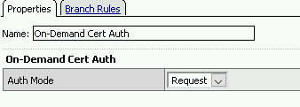
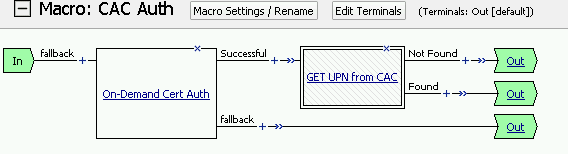
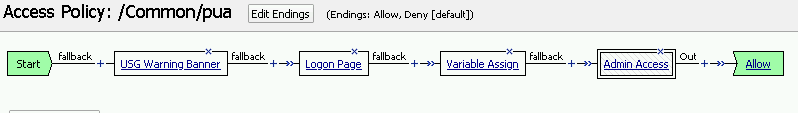
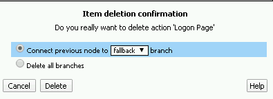
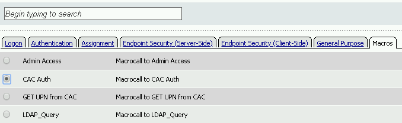

2.1.7. Lab – Test the Configuration¶
In this section you test access to a NGINX site requiring mTLS.
2.1.7.1. Task – Access mtls.acme.com¶
- From the jumpbox’s webbrowser, access https://mtls.acme.com

- Login with the username: user1 and password: user1

- You will be logged into the site displaying the Cert userID for user1@f5lab.local
- Click the Expand Certificate Data Array to see the contents of the certificate.

- Scroll down the Certificate contents and you will see in Subject Array the commonName of the certificate is F5CertSSO. This certificate was build using the contents of the certificate copied into the APM policy

- Continue to scroll down to the extension array section and you will see a custom extension of 1.1.1.1 has been inserted into the minted certificate. The values are base64 encoded and into the userID user1@f5lab.local

- Open a new incognito windows so you can test accessing mtls.acme.com with a different user.


- Login with the username: user2 and password: user2

- You will be logged into the site displaying the Cert userID for user2@f5lab.local
- Click the Expand Certificate Data Array to see the contents of the certificate

- Scroll down the Certificate contents and you will see in Subject Array the commonName of the certificate is F5CertSSO. This certificate was build using the contents of the certificate copied into the APM policy
- Continue to scroll down to the extension array section and you will see a custom extension of 1.1.1.1 has been inserted into the minted certificate. The values are base64 encoded and into the userID user1@f5lab.local
